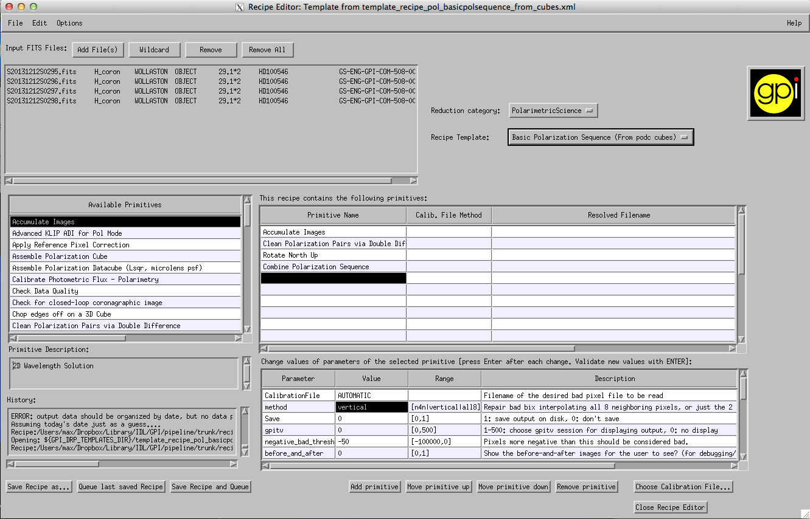

Table Of Contents
Previous topic
Quick Start Tutorial: Diving into data reduction
Next topic
Tutorial 3: Reducing your own GPI data

Quick Start Tutorial: Diving into data reduction
Tutorial 3: Reducing your own GPI data
This tutorial helps new users familiarize themselves with reducing polarization data sets from GPI. It assumes that you have already read the previous tutorial
We try to keep this tutorial as general as possible, so that it can be used as a guide for polarimetry reductions in general, but the details have been designed for use with the sample data set.
A sample polarization dataset can be found here in the file gpi_pol_tutorial.zip. Unzip that to get the tutorial dataset directory.
The science target is HD 100546, a Herbig Be star with a prominent circumstellar disk.
Download these files and place the first three into your GPI calibrations folder. As discussed in the first tutorial, whenever you manually add any files to your calibration directory, you need to click the Rescan Calib. DB button in the Status Console window . If you do not do this, you will run into errors because the pipeline doesn’t know about those new files.
Note
The creation of the dark file and the bad pixel map are not covered in this tutorial, but you should have already seen how to create your own dark files in the first tutorial.
Open the recipe editor and press the Add Files button. Select flat files taken in the same GPI filter band as your science data. In the tutorial data set select files S20131212S0022.fits to S20131212S0024.fits from the lamps directory.
In the Recipe Editor, from the drop down menus on the right select Reduction Category -> Calibration and then Recipe Template -> Calibrate Polarization Spot Locations - Parallel. By selecting the Parallel option by default the pipeline tries to spread the computation across 4 threads. If for some reason you’d rather limit the process to one thread you can choose Calibrate Polarization Spot Locations. [1]
Press Save Recipe and Queue. This process should take a few minutes, depending on your machine and whether or not you chose the parallel option.
Once this is complete it’s a good idea to double check that your spot calibration file is doing what it should. Open GPItv and open the file named S20131212S0022.fits. From the Labels menu select Labels -> Get Wavcal/Polcal from CalDB. Now select Labels-> Plot Wavecal/Polcal Grid and use the default options in the dialog box that pops up.
When zoomed out it your calibration should looked like a nice evenly spaced grid:
If your calibration looks like this:
then something has gone wrong. This is often a sign of poor bad pixel correction. Double check that you have an up-to-date bad pixel map. If the problem persists then you can start tweaking the options in the Parallelized Polarzation Spot Calibration primitive. Details on this requires an advanced understanding of how the pol spot locations are extracted and is not covered in this tutorial.
When you zoom in, the calibration should connect lenslets spots together via a grid of red lines, and join two orthogonal polarization states with green lines:
The green line indicates a polarization spot pair from the same lenslet.
To check that the spots have been matched correctly look for a low throughput lenslet. One can be found at roughly [1915,1339] detector coordinates. The two dim spots should be connected with a green line:
If the two dim spots are not linked up with a green line then you will have to adjust the centrXpos and the centrYpos primitive parameters for the Parallelized Polarization Spot Calibration. This will offset the pipeline’s starting guess for the lenslet grid position, which can be used to ensure the proper pairs of spots are linked. More details of how to choose this well are not within the scope of this tutorial.
If all is well then you have successfully created your polarization spot location calibration file. It has automatically been added to your calibration database. You are ready to begin reducing your data.
This step will walk through how to create polarization data cube from raw data. A polarization cube is a 3D data cube, where the third dimension holds two slices: one for each polarization orthogonal state as split by the Wollaston prism in the IFS.
In the Recipe Editor press the Add Files button and choose your Data Files. For the tutorial dataset this will be files S20131212S0295.fits to S20131212S0298.fits in the on_sky_data folder.
Select Reduction Category-> PolarimetricScience and Recipe Template -> Simple Polarization Datacube Extraction.
Because of flexure effects internal to the GPI IFS it is possible that your Pol Spot Calibration files will not properly reflect the locations of the Polarization spots in your science frame. To check this open GPItv and open one of your raw science images (e.g. S20131212S0295.fits for the tutorial dataset). Plot the Polcal spot locations as we did in Step 4 of creating our wavecal.
If there are flexure effects present then you will see the spot calibration misaligned from the spot centers:

Automatic compensation for flexure has been implemented as of pipeline version 1.2 using a primitive named ‘Flexure 2D x correlation with polcal’ that replaces the previous ‘Update Spot Shifts for Flexure’. If you insist on using an older version of the pipeline, instructions can be found on how to manually compensate for flexure at the bottom of this page.
The offsets found by the automatic flexure compensation will be printed out to the IDL terminal corresponding to the GPI DRP Status Console. To check that these offsets are appropriate for your data you can manually enter these offsets in the dialog box that pops up when you select Labels-> Plot Wavecal/Polcal Grid in GPItv.
Your Recipe Editor Window should now look something like this:

Now Press “Save Recipe and Queue”. The pipeline should create 4 files with suffixes “_podc”. For each raw data file the pipeline has created a 3D data cube with one image for each orthogonal polarization. You can now view your podc files in GPItv (a window should have popped open automatically).
- You can view the total intensity (the sum of the two images), the difference of the polarizations or the normalized difference (the difference divided by the total intensity), by selecting either option in the drop down menu highlighted in red:

At this step, depending on your dataset and your observing band, you may notice a moire pattern in the difference of polarizations . This is an artifact of the datacube assembly procedure [2] that is commonly seen, particularly for K band data with strong thermal background. Do not fear, it will get removed later on during the double differencing.
If you switch between the 4 output files (for instance using the Browse Files tool from the File menu), you can see the polarization modulate. Note that for convenience the waveplate position angle is displayed alongside the Wollaston prism label in the ‘Disperser’ field at top center of the GPItv window.
In the Recipe Editor, create a new recipe. Press the Add Files button and select your newly created podc files. A standard polarization sequence has at least four rotations of the half-wave plate, rotating from 0 degrees to 67.5 degrees in 22.5 degree increments, though many observing sequences will have have more. For the tutorial you should add the files named: S20131212S0295_podc.fits to S20131212S0298_podc.fits.
If you are unsure where they have been saved, the GPI DRP Status Consol provides the path of the last saved file.
Select Reduction Category-> PolarimetryScience and Recipe Template -> Basic Polarization Sequence (from podc cubes).
An important step in combining a polarization sequence is rotating the images to the same position angle. This is done by the Rotate North Up primitive, which looks for the pivot point of the rotation in the header keywords [PSFCENTX, PSFCENTY]. These keywords are created by the Measure Star Position for Polarimetry primitive that was run while creating the polarization data cubes. This primitive relies on an estimate of the centre position, provided as a primitive parameter, which it refines into a more precise estimate via a Radon transform based algorithm. If the star was well centred on the detector during your observations then the primitive should have successfully found a centre close to [140,140]. In general it is worth double checking that this was done correctly.
Open one of your podc files in GPItv and check the Science header extension for the PSFCENTX and PSFCENTY keywords. Check that this is consistent with the centre of the image in GPItv. For the tutorial dataset the centre is roughly at [139,140]:

(If the keyword positions do not match with the image location then you should include the Measure Star Position primitive in recipe below before the Accumulate Images primitive. Make sure to update the x0 and y0 primitive parameters with an updated initial guess for the centre location.)
- Your recipe editor should now look roughly like this:
- 
Presss “Save Recipe and Queue” and wait for the pipeline to process your files. The result will be a fits file with a _stokesdc suffix.
Your final file will have four polarization slices, each corresponding to one Stokes parameter. You can flip through the slices using the selection bar in GPItv:

You can also view the linear polarized intensity or the linear polarized fraction by selecting them in the drop down menu. Keep in mind that the polarized fraction is calculated using the Stokes I slice, which has not been PSF subtracted, and so will only provide you with a lower limit to the actual linear polarized fraction.
You can plot polarization vectors from the Labels menu: Labels -> Polarimetry. The dialog box provides you with a number of options.
- You may mask out vectors based on simultaneous minimum and maximum values of both the polarized intensity and polarized fraction. For example:


- If you are confident that you have a good estimate of the star’s location you can create a Stokes Data Cube in one step by selecting Recipe Template -> Basic Polarization Sequence (from Raw Data).
- Enter the estimate of the star’s coordinates as parameters to the “Measure Star Position for Polarimetry” primitive (or leave them as the default values).
- Press “Save Recipe and Queue”
Automatic flexure correction has been implemented as of version 1.2 of the pipeline. If you have an older version of the pipeline you will have to manually update the spot positions to account for flexure effects. Open your data file and plot the Polcal spot locations as described above. At this point you should estimate (by eye) the offset [dx,dy] between the spot calibration and the centres of the pol spots. It should be on the order of 1 pixel or less. In the most extreme cases you might have offsets of up to 3 pixels. For the tutorial dataset the offsets are approximately [dx,dy]=[-0.5,0.6]. You can apply shifts to the grid display in GPItv using the “Plot Wavecal/Polcal Grid” options dialog box.
Return to the Recipe Editor window, remove the primitive named ‘Flexure 2D x correlation with polcal’ and replace it with the primitive named “Update Spot Shifts for Flexure” from the Available primitives list. Change the Value of the method Parameter to “manual”. Enter your estimated [dx,dy] in the manual_dx and manual_dy Parameters. Don’t forget to press ENTER after changing primitive parameter values.
Your Recipe Editor Window should now look something like this:

You may now continue with the reduction by pressing ‘Save Recipe and Queue’ as in step 4 of the Creating Polarization Data Cubes (podc files) section.
Footnotes
| [1] | Note that the compiled IDL virtual machine does not support the IDL-Bridge object used to enable the parallelization of this task across multiple processes. If you are running the GPI pipeline using the compiled code with the virtual machine, then you will need to choose the single thread option here, or in any case parallelization will be automatically disabled. |
| [2] | Specifically it arises because of accidental systematic biases in the extraction regions used to sum the flux from each lenslet spot. Some spots are well centered on a pixel, some are centered on the corner between four pixels, etc. The current extraction box is fixed in size for all lenslet spots (5 pixels, rounded to integer pixel locations) and thus doesn’t take into account the variations in encircled energy depending on how well each spot is centered. Here too we are working on improved algorithms (optimal extraction based on empirically calibrated subpixel resolution lenslet PSFs) that will mitigate this issue. |


{kind=link}